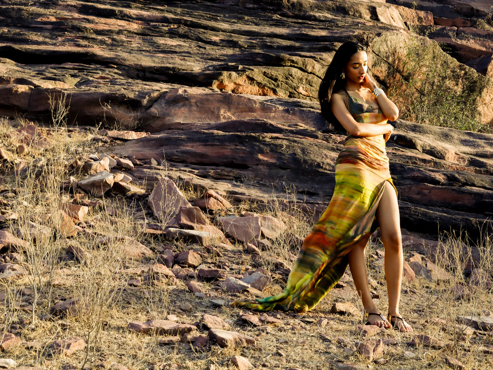

Seven garments · Team collection
Padmabala S — Fashion design portfolio, 2026
View collectionsPadmabala S  is a fashion design student at NIFT Jodhpur, specialising in heritage & couture. She treats the environment as a living archive
is a fashion design student at NIFT Jodhpur, specialising in heritage & couture. She treats the environment as a living archive  where life experiences and artistic observations are translated into thoughtful silhouettes.
where life experiences and artistic observations are translated into thoughtful silhouettes.
 RAW — Winning Collection, Spectrum’26
RAW — Winning Collection, Spectrum’26
Couture · Print & dye · Ready-to-wear · Denim

Treating the environment as a living archive.
Recognition